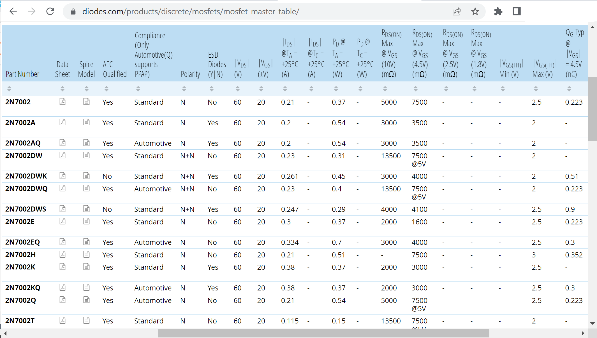
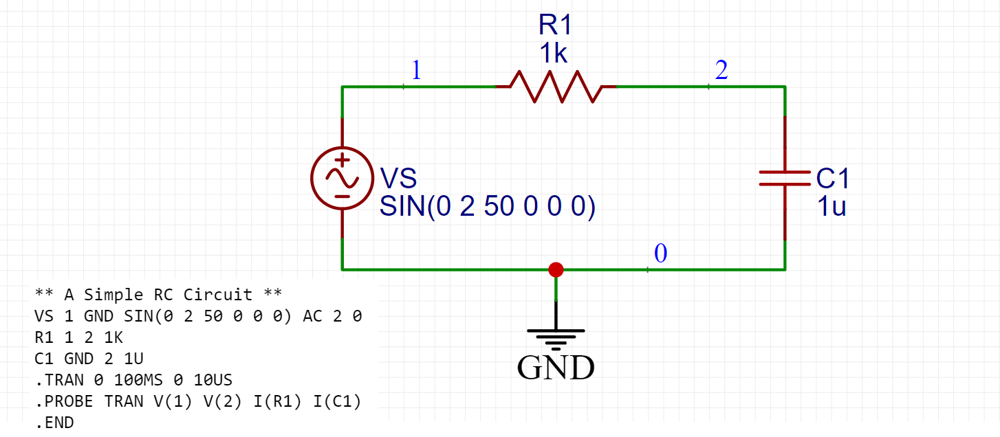
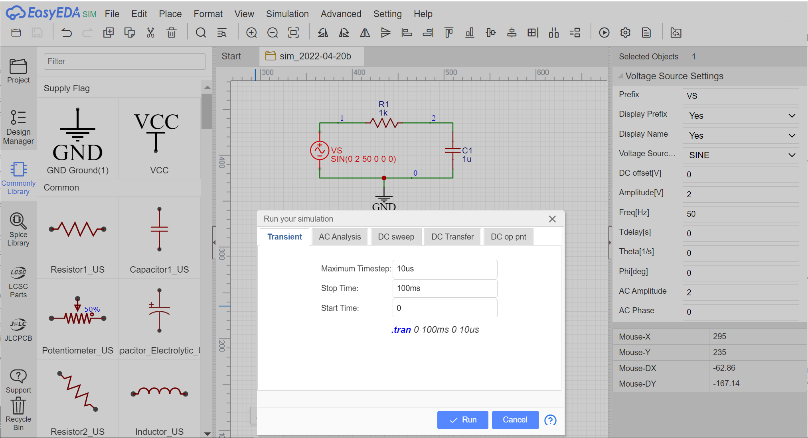
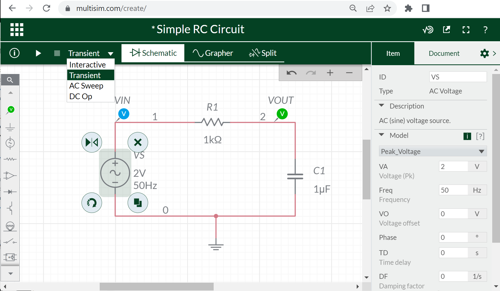
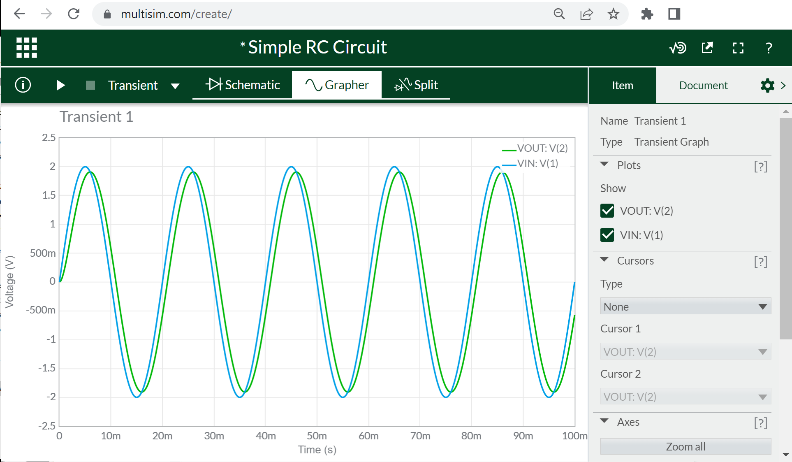
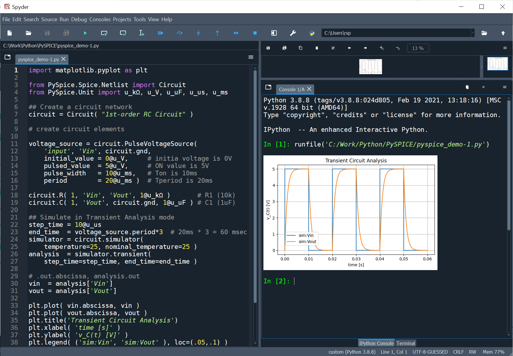

ซอฟต์แวร์สำหรับการจำลองและวิเคราะห์การทำงานของวงจรไฟฟ้า-อิเล็กทรอนิกส์#
บทความนี้กล่าวถึง การใช้ซอฟต์แวร์เพื่อช่วยในการวิเคราะห์และจำลองการทำงานของวงจรไฟฟ้า-อิเล็กทรอนิกส์
Keywords: Electronic Design Automation (EDA), Circuit Simulation, Analog and Mixed-Signal Circuit Simulators
▷ Circuit Simulation#
วงจรไฟฟ้าและอิเล็กทรอนิกส์ มีองค์ประกอบพื้นฐานหลายประเภท เช่น ตัวต้านทาน (Resistors: R) ตัวเก็บประจุ (Capacitors: C) ตัวเหนี่ยวนำไฟฟ้า (Inductors: L) แหล่งจ่ายไฟฟ้า (Sources) รวมถึงอุปกรณ์อิเล็กทรอนิกส์ที่ถูกสร้างมาจากสารกึ่งตัวนำ (Semiconductor Devices) เช่น ไดโอด (Diodes) และ ทรานซิสเตอร์ (Transistors) ซึ่งจำแนกได้หลายประเภทย่อย และไอซีต่าง ๆ เช่น ออปแอมป์ (Op-Amps)
ความซับซ้อนและความยากง่ายในการวิเคราะห์วงจรไฟฟ้า ก็ขึ้นอยู่กับจำนวนและประเภทของอุปกรณ์ที่นำมาใช้ในวงจร รวมถึงฟังก์ชันการทำงานของอุปกรณ์เหล่านั้น เช่น ความสัมพันธ์ระหว่างปริมาณทางไฟฟ้า-แรงดันไฟฟ้าและกระแสไฟฟ้า และคุณสมบัติของอุปกรณ์ที่มีความเป็นเชิงเส้นหรือไม่เป็นเชิงเส้น เป็นต้น ดังนั้นการวิเคราะห์โดยใช้ทฤษฎีวงจรไฟฟ้า และวิธีการทางคณิตศาสตร์ จึงมีข้อจำกัด หากจะต้องทำด้วยวิธีที่เรียกว่า "Pencil & Paper Calculation" หรือ การคำนวณด้วยมือ
นอกเหนือจากวิธีการทดลองสร้างวงจรต้นแบบ (Circuit Prototyping) เพื่อตรวจสอบการทำงานของวงจรหรือศึกษาพฤติกรรมของวงจร เช่น การต่อวงจรบนเบรดบอร์ด (Breadboard) แล้ววัดสัญญาณทางไฟฟ้าด้วยเครื่องมือวัดประเภทต่าง ๆ การวาดผังวงจรและจำลองการทำงานของวงจรโดยใช้ซอฟต์แวร์ (Circuit Simulation Software) ก็ถือว่าเป็นอีกหนึ่งวิธีที่มีความสะดวกและมีการใช้งานแพร่หลาย และในปัจจุบันก็มีซอฟต์แวร์ให้นำมาใช้ได้ฟรีอยู่หลายตัวเลือก
ประโยชน์ของการใช้ซอฟต์แวร์จำลองและวิเคราะห์การทำงานของวงจรไฟฟ้า-อิเล็กทรอนิกส์
- ช่วยในการศึกษาพฤติกรรมการทำงานของวงจร
- ช่วยในการประเมินหรือวัดประสิทธิภาพในการทำงานของวงจรหรืออุปกรณ์อิเล็กทรอนิกส์
- สามารถออกแบบและจำลองการทำงานของวงจร ก่อนที่จะนำไปสร้างหรือผลิตฮาร์ดแวร์จริง เพื่อช่วยให้นักออกแบบมั่นใจว่า ได้ออกแบบวงจรที่ทำงานได้ตามข้อกำหนด มีการจำลองการทำงานของวงจรภายใต้เงื่อนไขต่าง ๆ เช่น การปรับเปลี่ยนพารามิเตอร์ของวงจรในช่วงที่กำหนดไว้
- ช่วยในการค้นหาสาเหตุของปัญหาที่เกิดขึ้น หากวงจรที่ได้ออกแบบนั้นไม่เป็นไปตามข้อกำหนด
หากพิจารณาการวิเคราะห์วงจรไฟฟ้าแบบเชิงเส้น (Linear Circuits) เป็นตัวอย่าง เช่น วงจรประเภท R L C รูปแบบของกิจกรรมอาจเป็นดังนี้
- Level 1) เรียนรู้ทฤษฎีทางวงจรไฟฟ้า แล้วคำนวณด้วยมือสำหรับโจทย์แบบฝึกหัด และใช้เครื่องคิดเลขสำหรับการคำนวณ
- Level 2) เหมือน Level 1 แต่มีการใช้ซอฟต์แวร์มาช่วยในการวิเคราะห์วงจร เช่น การจำลองการทำงาน การเปลี่ยนพารามิเตอร์ของวงจร เพื่อดูผลลัพธ์และแนวโน้มที่เกิดขึ้นหรือความเชื่อมโยงกันระหว่างปริมาณทางไฟฟ้าต่าง ๆ ในวงจร
- Level 3) เหมือน Level 2 แต่มีการฝึกเขียนโปรแกรมโดยใช้ภาษาคอมพิวเตอร์ระดับสูง เพื่อช่วยในการทำวิเคราะห์วงจรและทำให้มีความเข้าใจมากขึ้น
▷ SPICE-based Circuit Simulation Software#
ซอฟต์แวร์ในประเภทโปรแกรมช่วยวิเคราะห์การทำงานของวงจรไฟฟ้า มีพื้นฐานมาจาก SPICE (Simulation Program with Integrated Circuit Emphasis) ซึ่งได้มีการพัฒนาเพื่อใช้ในการวิเคราะห์วงจรแบบแอนะล็อก มีใช้งานมาตั้งแต่ราวปีค.ศ. 1973 โดยนักวิจัยของมหาวิทยาลัย University of California at Berkeley (CA, USA) และได้มีการพัฒนาต่อเนื่องจนกลายเป็นซอฟต์แวร์เชิงการค้า (Commercial Software) เช่น ซอฟต์แวร์ที่มีชื่อว่า PSPICE ของบริษัท MicroSim จัดอยู่ในประเภทของซอฟต์แวร์ที่เรียกว่า Analog & Mixed-signal Simulation Software
ต่อมาบริษัทนี้ได้ถูกซื้อและรวมเข้ากับ OrCAD (ในปีค.ศ. 1997) ซึ่งเป็นผู้พัฒนาซอฟต์แวร์ OrCAD Schematic & PCB Design Tools และอีกไม่กี่ปีต่อมา (ในปีค.ศ. 1999) OrCAD Capture & PSpice ก็ได้ถูกซื้อไปโดยบริษัท Cadence Design Systems และซอฟต์แวร์ถูกนำไปรวมเข้ากับซอฟต์แวร์ Cadence Allegro PCB Design & Analysis Tools (ในปีค.ศ. 2005)
ตัวอย่างซอฟต์แวร์ที่เป็นตัวเลือกสำหรับการจำลองการทำงานของวงจร ได้แก่
- LTSpice พัฒนาโดยบริษัท Linear Technology ต่อมาถูกรวมเข้ากับบริษัท Analog Devices และได้เปิดให้ดาวน์โหลดใช้งานซอฟต์แวร์ได้ฟรี
- NI MultiSim ของบริษัท National Instruments (NI) แต่มีเวอร์ชันที่ทำงานแบบออนไลน์ให้ใช้ได้ฟรี Multisim Live Online Circuit Simulator แต่มีข้อจำกัดในการใช้งานอยู่บ้าง เช่น ขนาดของวงจร (Components per circuit)
- EasyEDA Designer เป็นซอฟต์แวร์สำหรับการออกแบบวงจรและวาดลายวงจร แต่สามารถจำลองการทำงานของวงจรได้ โดยใช้ Ngspice และต่อมาเปลี่ยนเป็น LTSpice หากใช้รายการอุปกรณ์ที่มีโมเดลสำหรับ SPICE เพื่อการจำลองการทำงาน
- AUTODESK Tinkercad - Circuits เป็นซอฟต์แวร์ฟรีที่ทำงานในระบบคลาวด์ และสามารถจำลองการทำงานของวงจรไฟฟ้าและอิเล็กทรอนิกส์ได้ เหมาะสำหรับผู้เริ่มต้นและใช้งานผ่านหน้าเว็บเบราว์เซอร์
- TINA ของบริษัท DesignSoft
มีเวอร์ชันสำหรับนักศึกษา Student Version (for Home Use Only) ให้ใช้ได้ฟรี นอกจากนั้นยังมีเวอร์ชันออนไลน์ในระบบคลาวด์ด้วย TINACloud
- บริษัท Infineon ซึ่งเป็นผู้ผลิตไอซี-อุปกรณ์อิเล็กทรอนิกส์ ได้เปิดให้ผู้ใช้ได้ทดลองใช้ไอซีและวงจรตัวอย่างของทางบริษัทผ่านทางเว็บไซต์ Infineon Designer - Online SPICE Simulator ซึ่งทำงานอยู่บน TINACloud เช่นเดียวกับบริษัท Texas Instruments (TI) ที่เปิดให้ใช้งาน TINA-TI และอีกตัวเลือกหนึ่งเป็น PSPICE-FOR-TI
- Micro-Cap พัฒนาโดยบริษัท Spectrum Software มีการใช้งานมาตั้งแต่ราวปีค.ศ. 1982 แต่ในปีค.ศ. 2019 ได้ปิดกิจการไปแล้ว
- Proteus Design Suite ของบริษัท Labcenter Electronics (UK) เป็นอีกหนึ่งซอฟต์แวร์ที่ใช้ในการจำลองการทำงานของวงจรไฟฟ้าและอิเล็กทรอนิกส์ได้ รวมถึงการออกแบบ PCB และจำลองการทำงานโค้ดสำหรับไมโครคอนโทรลเลอร์ได้ด้วย ผู้ใช้จะต้องเสียค่าลิขสิทธิ์สำหรับการใช้งาน (Proteus Licensing & Commercial Prices) แต่มีเวอร์ชันให้ทดลองใช้งาน (Demo Version) ซึ่งมีข้อจำกัดอย่างเช่น ไม่สามารถบันทึกไฟล์ได้
- SIMetrix/SIMPLIS Simulator ของบริษัท SIMetrix Technologies (UK) มี Free Demo Version ให้ลองใช้งานได้ แต่จำกัดขนาดของวงจรที่สามารถจำลองการทำงานได้
- Ngspice เป็นซอฟต์แวร์ประเภท Open Source แต่ไม่มีส่วนที่เป็น GUI และนิยมนำไปใช้ร่วมกับซอฟต์แวร์อื่น โดยให้ทำงานเป็น Backend เช่น เรียกใช้งานในลักษณะที่เป็น Shared library หรือ ทำงานในโหมด Server
- Qucs-S เป็นซอฟต์แวร์ประเภท Open Source พัฒนาขึ้นเพื่องานวิจัย เขียนด้วยภาษา C/C++ และใช้ Qt สำหรับ GUI Framework และใช้ซอฟต์แวร์ เช่น Ngspice หรือ Xyce เป็น Simulation backends
ในปัจจุบันซอฟต์แวร์ในกลุ่ม Circuit Simulation Software สามารถรองรับการวิเคราะห์วงจรหลายแบบ นอกเหนือจากวงจรแอนะล็อก (Analog Circuits) ก็มีวงจรดิจิทัลที่ใช้ไอซีลอจิกต่าง ๆ รวมเรียกว่า (Mixed-Signal Circuits) บางซอฟต์แวร์ก็สามารถจำลองการทำงานร่วมกับไมโครคอนโทรลเลอร์ที่มีเฟิร์มแวร์ทำงานได้ไปพร้อม ๆ กัน
ข้อสังเกต: แม้ว่าซอฟต์แวร์ส่วนใหญ่ตามที่ได้ยกตัวอย่างไป มีพื้นฐานการทำงานมาจาก SPICE และมาพร้อมกับไลบรารีของอุปกรณ์ต่าง ๆ ให้เลือกใช้ในวงจรได้ บริษัทผู้ผลิตไอซีหรืออุปกรณ์อิเล็กทรอนิกส์หลายราย ก็เปิดให้ดาวน์โหลดไฟล์ที่เรียกว่า SPICE models ให้นำไปใช้งานได้ แต่การเพิ่มหรือนำเข้าไฟล์ที่เป็นโมเดลของอุปกรณ์เพื่อใช้ในการจำลองการทำงานของคอมโพเนนต์ อาจมีรายละเอียดแตกต่างกันได้ ดังนั้นควรตรวจสอบไฟล์ที่จะนำมาใช้งานว่า เป็นไฟล์แบบใดและเป็น Generic SPICE / PSPICE-compatible หรือไม่

รูป: ตัวอย่างหน้าเว็บไซต์ที่มีตัวอย่างไฟล์ Datasheet PDFs และ SPICE Models ให้ดาวน์โหลด เช่น สำหรับทรานซิสเตอร์-มอสเฟต (MOSFETs) (ที่มา: https://diodes.com)
▷ SPICE Netlist#
การใช้ซอฟต์แวร์สำหรับการจำลองการทำงานของวงจรโดยทั่วไปแล้ว จะเริ่มต้นด้วยการวาดผังวงจร (Schematic Capture หรือ Schematic-based Design Entry) และใช้งานซอฟต์แวร์ในลักษณะที่เป็นกราฟิกสำหรับผู้ใช้งาน (GUI) เมื่อวาดผังวงจรแล้วจะมีการบันทึกไฟล์ ในรูปแบบที่กำหนดไว้ซึ่งอาจแตกต่างกันไปตามซอฟต์แวร์ที่ใช้งาน
ลองมาดูตัวอย่างรูปแบบของไฟล์ที่เรียกว่า SPICE Netlist ซึ่งเป็นข้อความ (Text-based)
ที่ประกอบด้วยบรรทัดของคำสั่งต่าง ๆ มีการใช้คำสั่งที่เรียกว่า SPICE Directives
(คำสั่งที่เริ่มต้นด้วยสัญลักษณ์ . แล้วตามด้วยชื่อคำสั่ง) หรือ เรียกว่า SPICE Control Statements
และไฟล์นี้จะมีคำสั่งจบท้ายด้วย .end
แต่ถ้าหากเริ่มต้นบรรทัดด้วยสัญลักษณ์ * (Asterisk) จะเป็นบรรทัดสำหรับคำอธิบายทั้งบรรทัด
(Comment Line) แต่ถ้าเริ่มต้นด้วยสัญลักษณ์ + (Plus)
หมายความว่า บรรทัดนี้เป็นข้อความที่ต่อจากบรรทัดก่อนหน้าและเป็นคำสั่งเดียวกัน

รูป: การวาดผังวงจรที่เรียกว่า RC Circuit โดยใช้ EasyEDA และตัวอย่าง SPICE Netlist ที่เกี่ยวข้อง
** A Simple RC Circuit **
VS 1 GND SIN(0 2 50 0 0 0) AC 2 0
R1 1 2 1K
C1 GND 2 1U
.TRAN 0 100MS 0 10US
.PROBE TRAN V(1) V(2) I(R1) I(C1)
.END
ในไฟล์ SPICE Netlist จะต้องมีส่วนที่เรียกว่า Circuit Topology ที่ระบุว่า มีองค์ประกอบของวงจรอะไรบ้าง และเชื่อมต่อกันอย่างไร
วงจรตัวอย่างนี้มีแหล่งจ่ายซึ่งได้มีการอ้างอิงโดยใช้ชื่อ VS และทำหน้าที่สร้างสัญญาณรูปไซน์ (SIN) ที่มีแอมพลิจูดแบบ
Peak Voltage เท่ากับ 2V และมีค่าดีซี-ออฟเซต (DC Offset) เท่ากับ 0V
มีความถี่ (Frequency) เท่ากับ 50Hz และถ้าจะใช้ในการวิเคราะห์วงจรแบบ AC Analysis
จะมีค่าแอมพลิจูด (Amplitude) เท่ากับ 2V และมีเฟส (Phase) เท่า 0 เรเดียน
ในวงจรมีตัวต้านทานที่ใช้ชื่ออ้างอิง R1 และมีค่าความต้านทานเท่ากับ 1k Ω
มีตัวเก็บประจุ C1 เท่ากับ 1 uF และต่ออนุกรมกันกับแหล่งจ่าย VS ให้ครบวงจร
การระบุว่าขาใดบ้างของอุปกรณ์ต่อเข้ากับส่วนอื่นของวงจรอย่างไร จะใช้วิธีระบุชื่อหรือหมายเลขของจุดอ้างอิง
หรือ เรียกว่า "เน็ต" (Net) เช่น 0 หมายถึง GND ของวงจร ในตัวอย่างนี้ แหล่งจ่าย VS
ต่อกับจุดอ้างอิง 1 และ GNDตามลำดับ (หากอุปกรณ์มีขั้ว จะเป็นขั้วบวกและลบตามลำดับ) ตัวต้านทาน R1
มีขาแต่ละหนึ่งต่อกับ 1 และ 2 ตามลำดับ และขาของตัวเก็บประจุ C1 ต่อเข้ากับ 2 และ GND ตามลำดับ
ในส่วนถัดไปเป็นคำสั่งการควบคุมเพื่อโหมดการวิเคราะห์วงจรด้วยการจำลองการทำงาน
การตั้งค่าและเลือกโหมดในการวิเคราะห์และจำลองการทำงานในตัวอย่างนี้เป็นแบบ Transient Analysis
โดยใช้คำสั่ง .tran และระบุว่า ให้เริ่มต้นบันทึกข้อมูลตั้งแต่เวลา 0 sec
จำลองการทำงานไปจนถึงเวลา 100 msec (Stop Time)
จำลองการทำงานตั้งแต่ 0 sec (Start Time)
และมีระยะเวลาเพิ่มขึ้นครั้งละ 10 usec (Step Size)

รูป: การตั้งค่าสำหรับแหล่งจ่าย VS และการเลือกโหมดสำหรับการวิเคราะห์วงจร (.trans)
สำหรับ EasyEDA
ลองเปรียบกับการใช้ซอฟต์แวร์ NI MultiSim Live ในการวาดวงจรและจำลองการทำงานดังนี้

รูป: การวาดผังวงจร Simple RC Circuit และเลือกโหมด Transient Analysis

รูป: ผลการจำลองการทำงานและแสดงรูปกราฟด้วย NI MultiSim Live
▷ Programming Approaches to Circuit Simulation#
นอกเหนือจากการใช้ซอฟต์แวร์สำเร็จรูปในการวิเคราะห์หรือจำลองการทำงานของวงจรแล้ว ยังมีอีกแนวทางหนึ่ง แต่เกี่ยวข้องกับการเขียนโปรแกรมโดยใช้ภาษาคอมพิวเตอร์ เช่น MATLAB หรือ Python ผู้ใช้จะต้องเขียนโค้ดเพื่อสร้างวงจร แล้วจำลองการทำงานของวงจรนั้น โดยใช้คำสั่งต่าง ๆ จากไลบรารี หรือ API ที่ได้มีการจัดทำไว้แล้ว
ตัวอย่างโปรเจกต์ที่ใช้ภาษา Python สำหรับการวิเคราะห์และจำลองการทำงานของวงจรได้แก่
- PySPICE
- เป็นโมดูลสำหรับ Python ที่ใช้งานร่วมกับ LTspice Circuit Simulatr (เรียกใช้งานแบบ Shared Library)
- พัฒนาโดย Fabrice Salvaire เริ่มต้นเวอร์ชันแรกในปี ค.ศ. 2014 และพัฒนาต่อเนื่องถึงปัจจุบัน
- Lcapy
- ใช้โมดูล SymPy เป็นพื้นฐานในการทำงาน ดังนั้นจึงเป็นการประมวลผลเชิงสัญลักษณ์และใช้ในการวิเคราะห์วงจรไฟฟ้าที่เป็นเชิงเส้น (Linear Circuit Analysis)
- พัฒนาโดย Michael Hayes ซึ่งเป็นอาจารย์ที่มหาวิทยาลัย University of Canterbury ในประเทศนิวซีแลนด์
- The Ahkab Project
- เป็นซอฟต์แวร์ประเภท SPICE-like Electronic Circuit Simulator โดยใช้ภาษา Python เวอร์ชันล่าสุดคือ v0.18 (released on July 12, 2015) แต่หลังจากนั้นไม่ได้มีการพัฒนาต่อ
- พัฒนามาตั้งแต่ปีค.ศ. 2006 โดย Giuseppe Venturini(ต่อมาได้เสียชีวิตลง ทำให้โปรเจกต์นี้หยุดการพัฒนาไป)
- SpicePy
- ใช้สำหรับการวิเคราะห์วงจรไฟฟ้าที่เป็นเชิงเส้น และใช้วิธีการประมวลผลเชิงตัวเลข (NumPy/SciPy)
- พัฒนาโดย Luca Giaccone ซึ่งเป็นอาจารย์ที่มหาวิทยาลัย Politecnico di Torino / Turin ประเทศอิตาลี
- The Zero Project
- ใช้สำหรับการวิเคราะห์วงจรไฟฟ้าที่เป็นเชิงเส้น และใช้วิธีการประมวลผลเชิงตัวเลข (NumPy/SciPy)
- พัฒนาโดย Sean Leavey

รูป: ตัวอย่างการเขียนโค้ด Python โดยใช้ PySPICE เพื่อจำลองการทำงานของวงจร RC ในโหมด Transient และแสดงรูปกราฟ
ในส่วนของภาคปฏิบัติ เช่น การใช้เครื่องมือวัด Digital Oscilloscope, Function Generator, Digital Power Supply อุปกรณ์เหล่านี้สามารถเชื่อมต่อ USB และ LAN/WiFi และรองรับการเขียนโปรแกรมควบคุมจากคอมพิวเตอร์ของผู้ใช้ได้ ดังนั้นนอกเหนือจากการกดปุ่มบนแผงควบคุม Front Panel ของเครื่องแล้ว ก็ยังสามารถใช้วิธีเขียนโปรแกรมควบคุมได้หลายภาษา เช่น C#, MATLAB หรือ Python เนื่องจากมีการกำหนดโพรโตคอลในการสื่อสารกับอุปกรณ์เครื่องมือวัดที่เป็นมาตรฐาน เช่น VISA (Virtual Instrument Software Architecture) และ LXI (LAN eXtensions for Instrumentation) เป็นต้น หรือใช้ซอฟต์แวร์ควบคุมได้เช่นกัน ยกตัวอย่างเช่น การทำ DC Sweep หรือ AC Sweep แล้วอ่านข้อมูลที่เป็นผลการทดลองจากเครื่องมือวัด แล้วนำมาสร้างรายงานการทดลองโดยอัตโนมัติ
▷ กล่าวสรุป#
บทความนี้นำเสนอเนื้อหาเกี่ยวกับซอฟต์แวร์ที่สามารถนำมาใช้ได้เพื่อการวิเคราะห์และจำลองการทำงานของวงจรไฟฟ้าและอิเล็กทรอนิกส์ ซึ่งมีตัวเลือกอยู่จำนวนมาก และสามารถนำไปใช้สำหรับการเรียนรู้ และฝึกปฏิบัติสำหรับผู้เรียน เพื่อช่วยทำให้เกิดความเข้าใจในเนื้อหาทฤษฏีที่เกี่ยวข้องได้ดีขึ้น
This work is licensed under a Creative Commons Attribution-ShareAlike 4.0 International License.
Created: 2022-04-20 | Last Updated: 2022-04-30